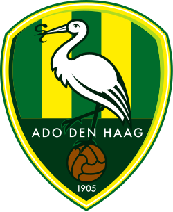
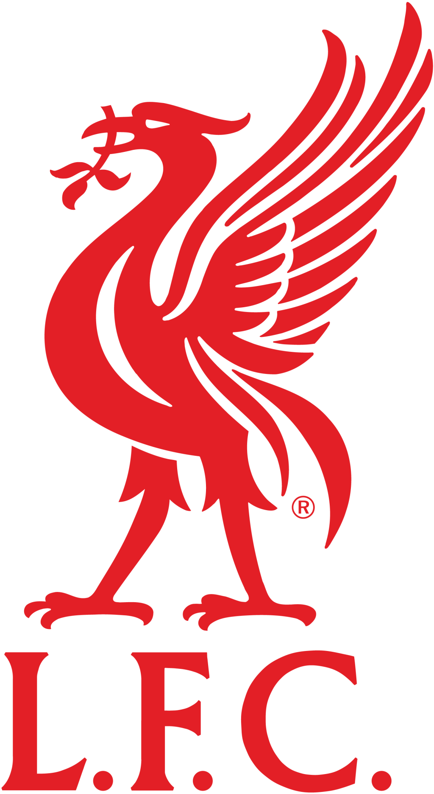

Leo Gordijn
Webdeveloper in opleiding
Over mij
Ik ben Leo Gordijn, 20 jaar oud en student HBO-ICT aan De Haagse Hogeschool. Binnen mijn opleiding ben ik bezig met webdevelopment en leer ik onder andere werken met HTML, CSS, JavaScript, C# en databases.
Wat ik leuk vind aan programmeren is dat je vanuit een idee stap voor stap iets werkends kunt maken. Ik ben nog volop bezig met het leren van verschillende technieken en probeer tijdens opdrachten steeds beter te begrijpen waarom bepaalde oplossingen worden gebruikt in plaats van alleen code werkend te krijgen.
Wat ik leer
Tijdens mijn opleiding werk ik met verschillende programmeertalen en technieken.
Werk
Naast mijn opleiding werk ik bij Hilgersom Horeca. Ik ben begonnen bij Puurr aan de Vliet en werk inmiddels op verschillende locaties, waaronder Puurr aan de Vliet, Puurr aan de Binck, Puurr aan de Dobbe, Puurr aan de Rijn en Restaurant Leeuwenbergh.
Doordat ik op verschillende locaties werk, werk ik ook met verschillende collega's en in verschillende omgevingen. Hierdoor heb ik geleerd om mij snel aan te passen en goed samen te werken binnen verschillende teams.
Bekijk Hilgersom HorecaVoetbal
Voetbal is een groot onderdeel van mijn vrije tijd. Ik speel zelf bij SV Nootdorp en daarnaast ben ik supporter van ADO Den Haag en Liverpool.
SV Nootdorp
Ik voetbal al bij SV Nootdorp sinds de mini's. Ik ben hier dus eigenlijk opgegroeid met voetbal en speel er tot op de dag van vandaag nog steeds. Ik heb het hier altijd naar mijn zin gehad en ben voorlopig ook zeker niet van plan om te stoppen.
Wikipedia-gegevens laden...
ADO Den Haag
Ik woon al mijn hele leven op loopafstand van het stadion van ADO Den Haag. Mijn vader is ook altijd al supporter geweest. Hij woont zijn hele leven al in Den Haag en is zelf opgegroeid dichtbij het Zuiderpark. Door hem en doordat de club zo dichtbij is, ben ik zelf ook met ADO opgegroeid en supporter geworden.
Wikipedia-gegevens laden...

Liverpool
Liverpool ben ik later gaan volgen. Omdat ik zelf verdediger ben, keek ik altijd erg op naar Virgil van Dijk. Daardoor ben ik steeds meer wedstrijden van Liverpool gaan kijken en ben ik uiteindelijk ook van de club zelf gaan houden. Inmiddels ben ik groot fan van het team.
Wikipedia-gegevens laden...

Contact
Wil je contact met mij opnemen? Bekijk dan mijn contactpagina. Hier vind je mijn e-mailadres en kun je het contactformulier invullen.
Naar contact